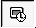
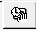
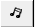
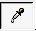
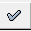

Tranzicija — Prelazni efekti | |
| Nazad | OpenOffice.org Impress | Napred |
Prilikom prikazivanja prezentacije način na koji se menjaju slajdovi zove se tranzicija.
Efekte tranzicije birate iz trake sa padajućim menijima Slide Show / Slide Transition .
Prozor sa efektima ima dva moguća tipa podešavanja.
Prvo birate efekt tranzicije i brzinu.
U padajućoj listi Effects odaberete kategoriju efekata i iz liste ispod odaberete efekt po želji.
U padajućoj listi u dnu prozora birate brzinu animacije. I potvrdite vaš izbor klikom na dugme .
Zatim birate način na koji se prelazi na sledeći slajd.
|  Dugme | Automatski nakon isteka zadatog vremena. |
|  Dugme | Poluautomatski nakon isteka zadatog vremena ili nakon klika. |
| Dugme | Ručno nakon klika. |
|  Dugme | Zvučni efekt koji prati promenu slajda. |
| Dugme | Odaberite sami zvučni zapis koji prati promenu slajda. |
|  Dugme | Osvežava promene koje napravite. |
|  Dugme | Primenjuje promenu koju ste odabrali. |
| Dugme | Prikaz slajda radi provere kako će efekt izgledati prilikom prikazivanja. |
| Nazad | Kući | Napred |
| Animacija sadržaja slajda | Gore | Konverzija prezentacije u druge formate |